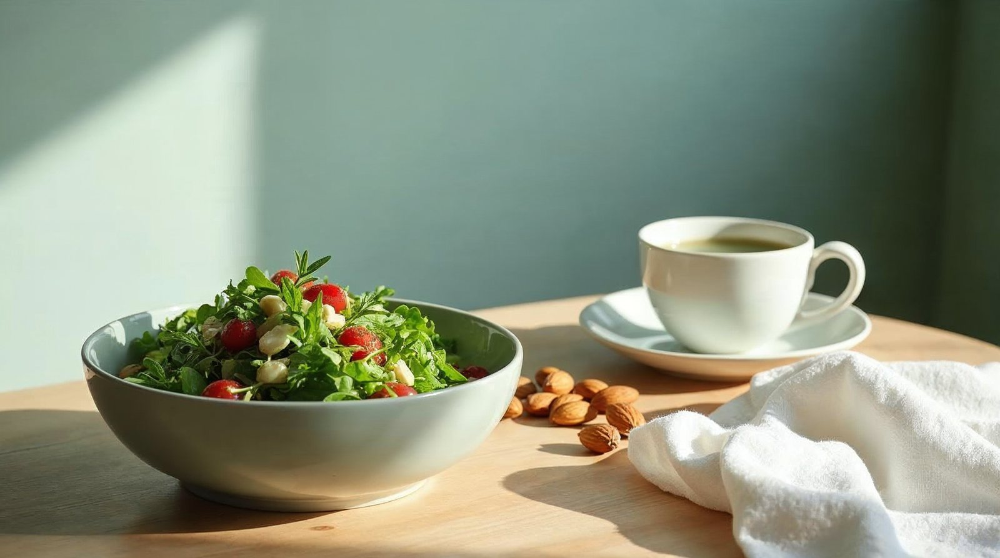
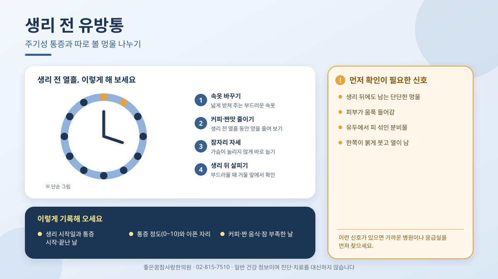

이종호 한의사 감수좋은꿈참사랑한의원 대표원장 (한의사 면허번호 19769)발행 2026-11-26 · 수정 2026-11-27
이 글의 차례
아침에 브래지어를 채우다가 저도 모르게 숨을 들이켜는 날이 있어요. 가슴 옆쪽이 묵직하게 붓고, 살짝 스치기만 해도 욱신거리죠. 엎드려 자던 습관도 이 무렵엔 어림없습니다. 달력을 보니 생리가 일주일쯤 남았어요. 매달 이맘때면 같은 일이 반복되는데, 혹시 다른 문제가 있는 건 아닐까 마음 한쪽이 불안합니다.
생리 전 유방통은 진료실에서 생각보다 자주 듣는 얘기예요. 그런데 막상 말을 꺼내기 쑥스러워서 다른 증상을 얘기하다가 마지막에 "그런데 가슴도 아파요" 하고 덧붙이시는 분이 많아요. 그 불편과 걱정은 충분히 얘기할 만한 거예요.
생리 전 유방통은 대부분 호르몬 흐름을 따라 왔다가 생리가 시작되면 가라앉는 주기성 통증이에요. 많은 분이 겪는 일이고, 그 자체로 겁낼 일은 아니거든요.
다만 두 가지는 나눠서 보셔야 해요. '주기를 따라 양쪽이 붓고 아픈 것'과 '주기와 상관없이 한쪽에만 계속되는 통증이나 새로 만져지는 멍울'은 다른 얘기예요. 뒤의 것은 따로 확인이 필요해요. 이 둘을 나눠 보는 게 첫걸음입니다.
이 글에서는 생리 전 유방통이 왜 생기는지, 어떤 경우에 유방 검사를 먼저 받아야 하는지, 일상에서 덜 불편하게 지내는 방법과 한의원에서 함께 살필 수 있는 부분을 차례로 정리했어요.
생리 전 유방통은 어떤 모양으로 오나요?
주기성 유방통은 보통 생리 일주일에서 열흘 전부터 시작해, 생리가 시작되면 며칠 안에 가라앉습니다. 양쪽 가슴이 함께 붓고 무거우며, 특히 겨드랑이 쪽 바깥 윗부분이 욱신거리거나 쑤시는 느낌을 많이 말씀하십니다.
가슴이 단단해지고 울퉁불퉁하게 느껴지기도 하는데, 생리가 끝나면 다시 부드러워지는 것이 특징입니다. 계단을 내려갈 때, 뛰거나 아이를 안을 때 더 아프고, 옆으로 눕거나 엎드려 자기가 불편해집니다.
통증의 정도는 사람마다 다릅니다. 살짝 당기는 정도로 지나가는 분도 있고, 옷이 스치는 것도 힘들어 일상에 지장을 받는 분도 있습니다. 같은 사람이라도 잠이 부족하거나 스트레스가 많은 달에는 더 심하게 느끼는 경우가 많습니다.
왜 생리 전에 가슴이 아플까요
생리 주기 동안 에스트로겐과 프로게스테론 같은 호르몬이 오르내리면서 유방 조직도 함께 변합니다. 배란 뒤 생리 전 시기에는 유선 조직이 붓고 수분이 고이면서 가슴이 커지고 예민해집니다. 그래서 생리가 시작되어 호르몬이 내려가면 통증도 함께 줄어드는 경우가 많습니다.
호르몬에 대한 반응은 사람마다 달라서, 같은 변화에도 유난히 크게 느끼는 분이 있습니다. 카페인을 많이 드시는 분, 짠 음식을 자주 드시는 분, 술을 자주 드시는 분, 잠이 부족한 분, 스트레스가 큰 시기에 더 심해진다고 말씀하시는 경우가 많습니다.
몸에 맞지 않는 속옷도 통증을 키웁니다. 생리 전에는 가슴이 커지는데 평소 속옷이 그대로면 조이거나 받쳐 주지 못해 더 불편해집니다. 피임약이나 호르몬 약을 새로 시작한 뒤 유방통이 생기는 분도 있어, 드시는 약도 함께 확인합니다.
한의학에서는 생리 전 가슴이 붓고 아픈 것을 기운이 한곳에 맺혀 잘 풀리지 않는 흐름과 연결해 보기도 합니다. 그래서 가슴만 보기보다 옆구리와 명치가 답답한지, 한숨이 잦은지, 예민함과 붓기, 잠과 소화가 함께 흔들리는지를 같이 살핍니다.
주기성 유방통과 따로 확인할 통증은 어떻게 다른가요?
주기를 따라오는 통증
생리 전에 시작해 생리가 시작되면 줄어들고, 양쪽에 비슷하게 오며, 넓은 부위가 묵직하게 아픈 경우가 많습니다. 생리가 끝난 뒤 가슴이 다시 부드러워진다면 주기성 통증에 가깝습니다.
주기와 상관없는 통증
생리 주기와 관계없이 한쪽의 한 자리만 계속 아프거나, 콕 집어 아픈 곳이 있다면 주기성 통증과 따로 봐야 합니다. 가슴 근육이나 갈비뼈 연골 쪽 통증, 등과 목에서 오는 통증이 가슴 통증처럼 느껴지는 경우도 있습니다.
먼저 유방 검사를 받아야 하는 경우
생리가 끝난 뒤에도 남아 있는 멍울, 새로 만져지는 단단한 덩어리, 피부가 움푹 들어가거나 귤껍질처럼 변한 곳, 유두에서 피가 섞인 분비물이 나오는 경우는 통증이 없더라도 유방외과에서 먼저 확인하셔야 합니다. 통증이 있다고 해서 더 걱정할 일도, 통증이 없다고 해서 안심할 일도 아니라는 점을 기억해 주세요.
스스로 점검해 보세요
해당하는 줄에 표시해 두셨다가 진료 때 보여 주세요.
- 생리 일주일 전쯤부터 가슴이 붓고 아프다
- 생리가 시작되면 며칠 안에 통증이 줄어든다
- 양쪽 가슴이 비슷하게 아프다
- 생리 전에 붓기, 예민함, 두통이 함께 온다
- 커피나 짠 음식을 많이 먹은 달에 더 아픈 것 같다
- 생리가 끝난 뒤에도 만져지는 멍울이 있다
- 한쪽 한 자리만 주기와 상관없이 계속 아프다
위의 다섯 줄은 주기성 유방통에 가까운 모습이고, 아래 두 줄에 해당한다면 유방외과 검사를 먼저 받아 보시길 권합니다.
나이와 시기에 따라 달라지는 유방통
생리를 시작한 지 얼마 안 된 시기에는 주기가 들쭉날쭉한 만큼 가슴 통증도 불규칙하게 오기 쉽습니다. 이때는 통증 자체보다 주기가 어느 정도 자리를 잡는지를 함께 지켜봅니다. 가슴이 자라는 과정에서 한쪽이 먼저 커지며 아픈 경우도 흔합니다.
삼사십 대에는 일과 육아, 잠 부족이 겹치면서 생리 전 증상이 더 무겁게 느껴진다는 분이 많습니다. 같은 호르몬 변화라도 몸이 지쳐 있으면 통증을 더 크게 느끼기 때문입니다. 이 시기에는 정기적인 유방 검진도 함께 챙기셔야 합니다.
갱년기에 가까워지면 생리 주기가 흔들리면서 유방통도 예전과 다른 모습으로 오기도 합니다. 한동안 없던 통증이 다시 생기거나, 생리가 건너뛰는 달에도 가슴이 당길 수 있습니다. 폐경 뒤에 새로 생긴 가슴 통증이나 멍울은 주기성 통증으로 보기 어려우니 유방외과에서 먼저 확인하세요.
출산 뒤 수유 중인 분의 가슴 통증은 젖이 고이거나 유선이 막혀 생기는 경우가 많아 생리 전 유방통과는 따로 봅니다. 수유 중 통증은 산부인과나 수유 상담을 먼저 받아 보시길 권합니다.
가슴 수술이나 시술을 받은 적이 있는 분은 그 자리 주변이 날씨나 주기에 따라 당기고 아프다고 말씀하시기도 합니다. 이런 통증도 생리 전 유방통과 섞여 느껴질 수 있어, 언제 어떤 수술을 받으셨는지 함께 알려 주시면 통증을 나눠 보는 데 도움이 됩니다.
먼저 이렇게 여쭙니다
유방통으로 오신 분께는 대략 이런 순서로 여쭙니다.
- 통증은 생리 며칠 전부터 시작해 언제 가라앉나요?
- 양쪽인가요, 한쪽인가요? 가장 아픈 자리는 어디인가요?
- 생리가 끝난 뒤에도 남는 멍울이 있나요?
- 최근 유방 검진이나 초음파를 받으셨나요?
- 피임약, 호르몬 약, 영양제 가운데 새로 시작한 것이 있나요?
- 커피, 짠 음식, 술은 어느 정도 드시나요?
- 생리 전 붓기, 예민함, 잠, 소화는 어떤가요?
마지막 유방 검진 뒤로 검진 주기가 지났다면 이번 기회에 함께 챙겨 보시라고 말씀드립니다. 가족 가운데 유방 질환을 앓은 분이 있다면 그것도 알려 주세요. 검진 시기를 정하는 데 참고가 됩니다.

일상에서 먼저 해 볼 수 있는 것
생리 전 유방통은 생활을 조금만 조정해도 한결 덜 불편하게 지나갈 수 있습니다. 한 가지부터 시작해 보세요.
- 생리 전 열흘 동안은 가슴을 잘 받쳐 주는 부드러운 속옷으로 바꾸기
- 운동할 때는 스포츠 브라로 흔들림 줄이기
- 커피와 에너지 음료를 생리 전에는 양을 줄여 보기
- 국물과 짠 반찬을 줄여 붓기를 덜 만들기
- 잠드는 시각을 일정하게 지키고 늦은 야식 줄이기
- 아픈 날에는 미지근한 물로 샤워하거나 따뜻한 수건을 잠시 대 보기
속옷은 생각보다 큰 차이를 만듭니다. 생리 전에는 평소보다 한 치수 여유 있는 것, 와이어가 없고 넓게 받쳐 주는 것을 준비해 두시면 하루가 한결 편해질 수 있습니다. 잘 때 가슴이 흔들려 아프다면 가벼운 수면용 속옷을 입는 분도 있습니다.
생리 전 일주일은 짠 음식과 함께 단 음식도 당기기 쉬운 때입니다. 과자나 케이크 대신 고구마, 바나나, 견과류처럼 든든한 간식을 미리 준비해 두시면 붓기와 기분의 출렁임을 함께 덜 수 있습니다.
몸을 움직이는 것도 도움이 됩니다. 가슴이 아프다고 움직임을 줄이기보다, 흔들림이 적은 걷기나 스트레칭으로 몸 전체의 순환을 돕는 편이 좋습니다. 어깨와 가슴 앞쪽을 펴 주는 스트레칭은 굳은 가슴 근육을 풀어 주기도 합니다.
마음의 긴장도 살펴 주세요. 생리 전에는 작은 일에도 예민해지기 쉬운데, 긴장이 쌓이면 가슴의 답답함과 통증을 더 크게 느끼는 분이 많습니다. 생리 전 일주일만큼은 일정을 조금 느슨하게 잡아 두시길 권합니다.
잠자리 자세도 한번 살펴보세요. 생리 전에는 엎드려 자거나 한쪽으로 오래 누우면 가슴이 눌려 새벽에 깨는 분이 많습니다. 바로 누워 무릎 아래에 베개를 받치거나, 옆으로 누울 때 가슴 앞에 작은 쿠션을 안고 자면 눌림이 덜해집니다. 잠을 덜 설친 다음 날은 통증도 조금 가볍게 느껴지기 쉽습니다.
진통제를 드실 때는 약국에서 안내받은 용법대로 드시고, 매달 진통제 없이는 지내기 어렵다면 산부인과나 유방외과에서 상의해 보세요.
한의원에서 함께 살필 수 있는 경우
- 유방외과에서 확인을 받았지만 생리 전 유방통으로 일상이 불편한 경우
- 생리 전 가슴 통증과 함께 붓기, 예민함, 두통이 겹치는 경우
- 생리 전후로 잠이 얕아지고 소화가 더딘 경우
- 옆구리와 명치가 답답하고 한숨이 잦은 경우
- 생리 주기가 불규칙하거나 생리통이 함께 심한 경우
좋은꿈참사랑한의원에 오시면 모든 분의 맥을 먼저 짚고, 아래 '먼저 확인이 필요한' 신호와 유방 검진 여부를 확인합니다. 그다음 생리 주기와 생리 전 증상의 흐름, 잠과 소화, 붓기를 함께 여쭤 한 달 가운데 어느 때가 가장 힘든지 찾습니다.
진찰한 내용을 바탕으로 생활에서 바꿔 볼 것 하나와 함께 침, 온열 관리, 한약 상담 가운데 지금 상태에 맞는 것을 정합니다. 한약을 상의할 때는 피임약이나 호르몬 약을 포함해 드시는 약을 모두 확인하고 신중하게 정합니다. 임신 가능성이 있다면 먼저 알려 주시고, 산부인과와 상의한 뒤 정합니다.
이렇게 기록해 오시면 상담이 쉬워집니다
두세 달 정도 주기를 따라 기록하면 통증의 모양이 훨씬 뚜렷하게 보입니다.
- 생리 시작일과 끝난 날
- 가슴 통증이 시작된 날과 가라앉은 날
- 통증 정도(0~10)와 가장 아픈 자리
- 커피, 짠 음식, 술을 드신 날
- 잠이 부족했거나 스트레스가 컸던 날
- 생리가 끝난 뒤 만져지는 멍울이 있는지
생리가 끝나고 며칠 뒤, 가슴이 가장 부드러울 때 거울 앞에서 모양과 피부를 살피고 손으로 만져 보는 습관을 들이시면 좋습니다. 새로운 변화가 보이면 기록해 두셨다가 유방외과에 먼저 보여 주세요. 휴대폰 달력 앱에 생리일과 통증 표시만 해 두셔도 두세 달 뒤에는 나만의 흐름이 한눈에 들어옵니다.
매달 반복되는 불편을 덜어 가는 방법
생리 전 유방통은 매달 찾아오니까 '원래 그런 거지' 하고 참고 넘어가기 쉬워요. 맞아요, 흔한 일이에요. 그런데 흔하다는 것과 참아야 한다는 건 다른 얘기거든요. 속옷 하나, 커피 한 잔, 잠드는 시각 하나만 바꿔도 다음 달의 불편이 달라질 수 있어요.
통증이 심한 달과 덜한 달을 나란히 놓고 보면, 그 사이에 잠과 커피, 바쁜 일정 같은 차이가 보이곤 해요. 그 차이를 하나씩 찾아가는 게 매달의 불편을 덜어 가는 현실적인 길이에요. 유방 검진 날짜를 달력에 적어 두는 것도 잊지 마세요.
한 달의 흐름과 몸의 긴장을 살피는 건 제가 할게요. 그 대신 이번 달엔 한 가지만요. 생리 전 열흘 동안 커피 양만 줄여 보세요. 나머지는 지금처럼 지내셔도 괜찮아요.
가슴 통증을 혼자 참아 온 시간이 길었다면 진료실에서 편하게 꺼내 놓으셔도 돼요. 말로 설명하기 어려우면 아픈 자리를 손으로 가리키기만 해도 충분해요. 커피를 줄여 본 달의 기록을 가져오시면 그것부터 같이 펼쳐 볼게요. 주기와 생활을 함께 보면 생각보다 많은 실마리가 보이거든요.
이런 증상은 먼저 확인이 필요합니다
- 생리가 끝나도 남는 단단한 멍울, 움푹 들어간 피부, 유두의 피 섞인 분비물 가운데 하나라도 있는 경우
- 가슴 한쪽이 붉게 붓고 뜨겁거나, 열이 함께 나는 경우
이런 신호가 있으면 한의원보다 가까운 병원이나 응급실을 먼저 찾으세요.
함께 읽으면 좋은 글
- 생리 전 증후군(PMS)으로 생리 일주일 전마다 몸과 마음이 흔들릴 때는 무엇을 살피나요?
- 생리 전 일주일마다 예민해지고 짜증이 늘 때는 어떻게 살피나요?
- 월경 주기가 불규칙할 때 한의원에서는 무엇을 먼저 확인하나요?
- 생리통이 심할 때 한의원에서는 무엇을 먼저 묻고, 언제 병원 검사가 필요한가요?

여쭙는 것
- 통증은 생리 며칠 전부터 시작해 언제 가라앉나요?
- 양쪽인가요, 한쪽인가요? 가장 아픈 자리는 어디인가요?
- 생리가 끝난 뒤에도 남는 멍울이 있나요?
생활에서 해 볼 것
- 생리 전 열흘 동안은 가슴을 잘 받쳐 주는 부드러운 속옷으로 바꾸기
- 운동할 때는 스포츠 브라로 흔들림 줄이기
- 커피와 에너지 음료를 생리 전에는 양을 줄여 보기
한의원에서 함께 살필 것
- 유방외과에서 확인을 받았지만 생리 전 유방통으로 일상이 불편한 경우
- 생리 전 가슴 통증과 함께 붓기, 예민함, 두통이 겹치는 경우
- 생리 전후로 잠이 얕아지고 소화가 더딘 경우
먼저 확인이 필요한 신호
- 생리가 끝나도 남는 단단한 멍울, 움푹 들어간 피부, 유두의 피 섞인 분비물 가운데…
- 가슴 한쪽이 붉게 붓고 뜨겁거나, 열이 함께 나는 경우
한눈에 보는 표
| 구분 | 핵심 |
|---|---|
| 여쭙는 것 | 통증은 생리 며칠 전부터 시작해 언제 가라앉나요? 양쪽인가요, 한쪽인가요? 가장 아픈 자리는 어디인가요? |
| 생활에서 해 볼 것 | 생리 전 열흘 동안은 가슴을 잘 받쳐 주는 부드러운 속옷으로 바꾸기 운동할 때는 스포츠 브라로 흔들림 줄이기 |
| 한의원에서 함께 살필 것 | 유방외과에서 확인을 받았지만 생리 전 유방통으로 일상이 불편한 경우 생리 전 가슴 통증과 함께 붓기, 예민함, 두통이 겹치는 경우 |
| 먼저 확인이 필요한 신호 | 생리가 끝나도 남는 단단한 멍울, 움푹 들어간 피부, 유두의 피 섞인 분비물 가운데 하나라도 있는 경우 가슴 한쪽이 붉게 붓고 뜨겁거나, 열이 함께 나는 경우 |
자주 묻는 질문
생리 전에 가슴이 아프면 유방에 문제가 있는 건가요?
생리 전에 양쪽이 붓고 아팠다가 생리가 시작되면 가라앉는 통증은 호르몬 흐름을 따라오는 경우가 많습니다. 다만 생리가 끝나도 남는 멍울이나 한쪽 한 자리의 지속되는 통증은 유방외과에서 먼저 확인하세요.
커피를 끊어야 하나요?
사람마다 차이가 커서 한마디로 말하기는 어렵습니다. 한 번에 끊기보다 생리 전 열흘 동안 양을 줄여 보고 기록으로 차이를 확인해 보세요.
유방 검사를 받았는데 이상이 없다고 해요. 그래도 아픈 건 왜 그런가요?
주기성 유방통은 검사에서 특별한 이상이 없어도 생길 수 있습니다. 검사로 확인을 받은 뒤라면 생리 주기와 생활 리듬, 붓기와 긴장을 함께 살피며 불편을 덜어 가는 방향을 찾습니다.
피임약을 먹으면서 가슴 통증이 생겼어요.
호르몬 약을 시작한 뒤 유방통이 생기는 분이 있습니다. 혼자 끊기보다 처방한 산부인과에 먼저 알려 상의해 주세요.
생리 전 유방통도 한의원에서 진료를 받을 수 있나요?
네, 유방 검사로 확인을 받으신 뒤라면 생리 전 증상과 잠, 소화, 붓기를 함께 살피며 진료 방향을 정합니다. 드시는 약은 모두 알려 주세요.
좋은꿈참사랑한의원은 재진 때 지난번 이야기부터 이어서 여쭙니다. 진료시간과 예약은 오시는 길에서 확인하세요.
어디서 상담받을 수 있나요?
좋은꿈참사랑한의원은 서울 동작구 만양로2길 2 신성빌딩 3층·5층(서울 동작구 상도동, 7호선 상도역 3번 출구 근처)에 있습니다. 한의사 3명(이종호 대표원장, 조영기 수석진료원장, 정원영 진료원장)이 진료합니다. 진료시간은 평일 09:30~20:00(점심 13:00~14:00), 토·일·공휴일 09:30~15:00이며, 방문 전 전화로 확인을 권합니다. 예약은 네이버 예약, 카카오톡 상담, 전화 02-815-7510로 받습니다.
이 글은 일반적인 건강 정보이며 개인의 진단이나 치료를 대신하지 않습니다. 증상이 있거나 복용 중인 약이 있다면 진료를 통해 확인하세요. 치료 효과는 개인마다 다를 수 있습니다.
작성 기준: 일반적으로 알려져 있는 건강 정보를 참고해 정리했습니다(대표원장 감수). 증상 기록은 1~2주 동안 하루 1회, 비슷한 시간에 적어 오시면 지난 상태와 비교하기 쉽습니다.